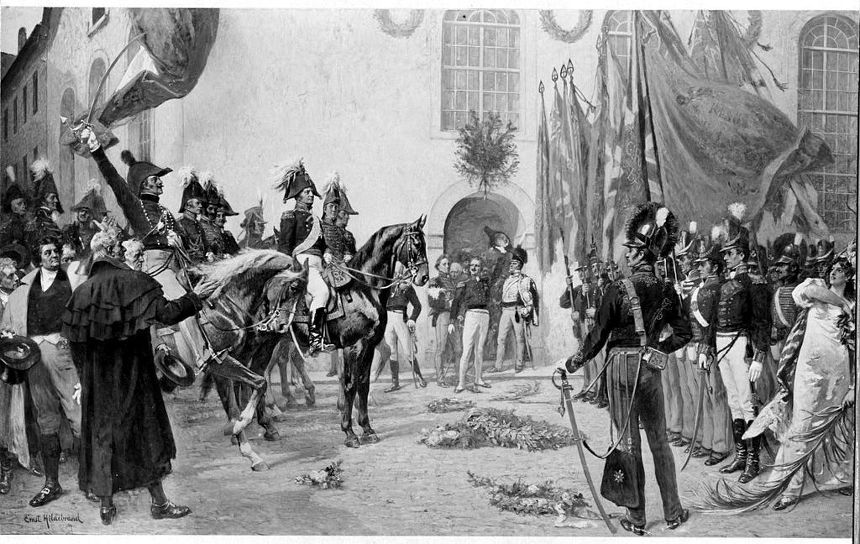
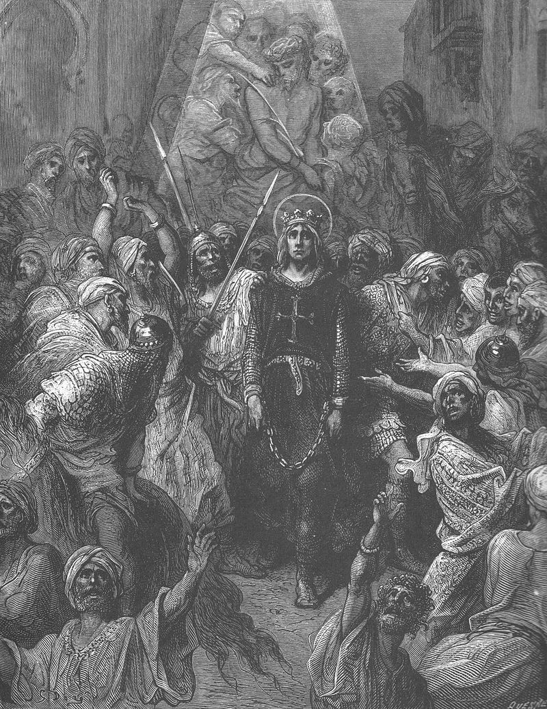
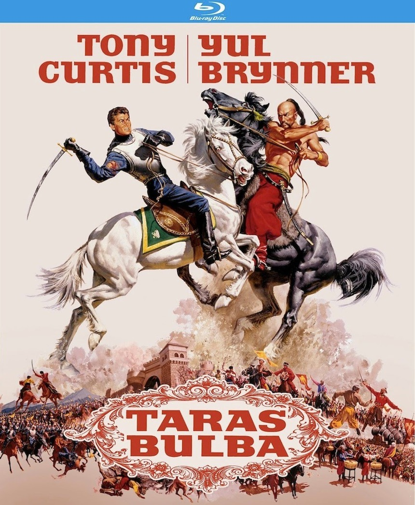
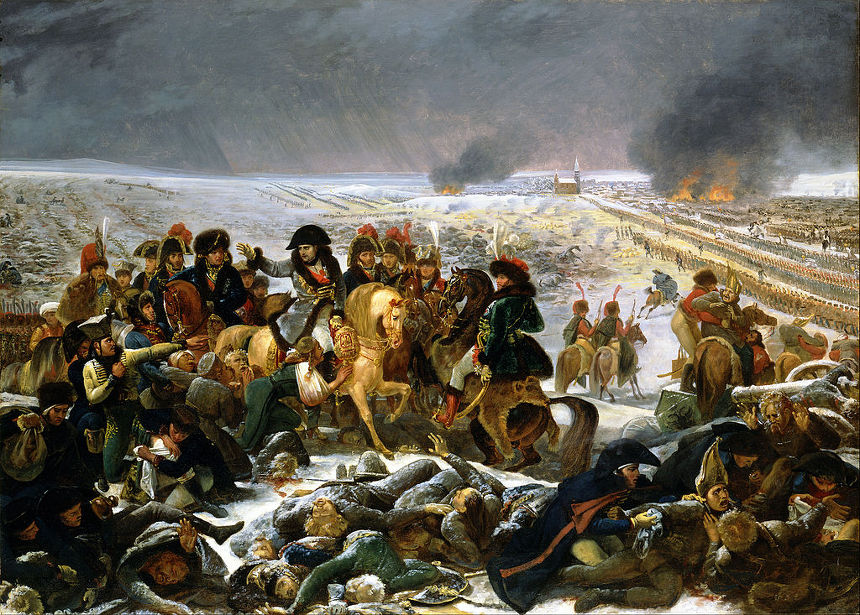
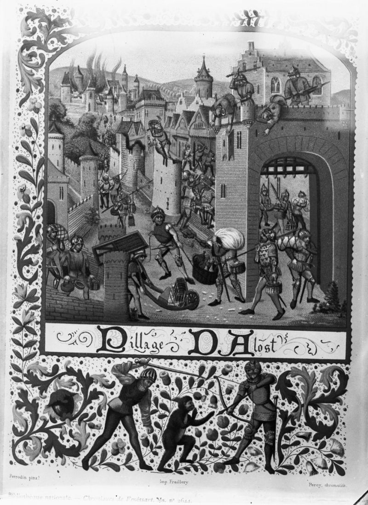

나폴레옹 시대의 병참부 이야기 (상편)
게시: 2019-02-04T23:38:37+09:00
샤우만(August Friedrich Ludolph Schaumann)이라는 분이 쓴 회고록이 이베리아 반도에서의 영국군 작전에 대한 귀중한 사료로 곧잘 인용됩니다. 이 샤우만이라는 분은 1778년 독일 하노버(Hanover)에서 태어난 순수 독일인으로서, 귀족 가문 출신의 신사였습니다. 영국 왕의 개인 영지이자 독립국이었던 하노버 공국의 군대에서 16세부터 21세까지 장교로 근무했던 샤우만은 원래 아버지의 사업을 이어 받을 준비를 하고 있었습니다. 그러나 나폴레옹의 명령을 받은 모르티에(Adolphe Edouard Casimir Joseph Mortier)의 1803년 하노버 점령을 계기로, 영국군 산하 왕립 독일군(The King's German Legion, KGL)에 가담하여 프랑스군과 싸우게 되었습니다.

(1816년 나폴레옹 전쟁이 완전히 끝난 뒤 고향 하노버로 금의환향하는 KGL 병사들의 모습입니다.)
그런데 이 분의 회고록을 보면 묘한 부분이 나옵니다. 그는 원래 KGL 제7 대대 소속의 장교였다가 병참부(commissariat)으로 일했습니다. 제7 대대에는 개인 사정으로 일종의 휴가를 낸 상태로요. 병참부에서는 그의 일처리 솜씨가 마음에 들었던지 병참감 대리(Acting Commisary-General)로의 승진을 제시했는데, 샤우만은 이렇게 된 이상 차라리 제7 대대에 사직서를 내고 정식으로 병참부 소속으로 이직하는 것이 어떨까 하고 고민합니다. 샤우만의 고민은 일종의 외인부대인 KGL 부대 소속의 장교직은 영국군 입장에서는 정규 장교직이 아닌지라, 제대 후에도 영국 정부로부터 연금(half-pay)을 받지 못할 것이라는 예상이 일반적이었다는 것이었습니다. 그때나 지금이나 직업 군인의 최대 장점은 연금이었던 모양입니다. 친구들도 그렇게 권유했기 때문에, 결국 샤우만은 KGL 제7 대대에 사직서를 내고 영국군 병참부에 정식으로 자리를 얻습니다.
그러나 사람의 운명은 운칠기삼이라고, 샤우만의 이 결정은 그다지 좋은 것이 아닌 것으로 드러났습니다. 정식으로 취업을 하고나자, 병참부에서는 말을 바꾸어 전에 제시했던 승진을 걷어들이고 샤우만이 병참감 보조 대리(Deputy-Assistant Commisary-General)라는 말단직부터 새로 시작해야 한다는 결정 사항을 통보했습니다. 게다가 더 나중의 일이긴 했지만 영국 의회에서는 KGL의 모든 장교들에게 영국 정규 장교들과 동일한 연금을 지급하기로 의결하여, 샤우만으로 하여금 자신의 결정에 땅을 치며 후회하게 만들었습니다.
여기서 궁금해지는 점이 있습니다. 병참부도 군대 아니던가요 ? 왜 KGL이라는 전투부대에서 병참부라는 수송부대로 자리를 옮기는데 사직서를 제출하고 계급이 바뀌는 등의 일이 일어나야 했을까요 ? 결론부터 말씀드리자면, 현대적인 군대와는 달리 나폴레옹 전쟁 시기에만 해도 병참 장교들은 군인이 아니라 민간인 신분이었습니다. 고대로부터 군의 보급은 군이 직접 수행하지 않았거든요. 정규군 장교가 병참 업무를 수행하기 시작한 것은 비교적 최근인 19세기 후반에 들어서의 일입니다.
원래 무기가 없는 군대는 존재해도 군량이 없는 군대는 존재할 수가 없습니다. 3일 이상 굶으면 모두 탈영해버리거나 죽어버릴테니까요. 이처럼 군대의 식량 보급은 매우 중요한 일이었는데도 병참은 그다지 영광스럽지 못한 업무로 취급되어 등한시되었고 상당히 원시적으로 운영되었습니다. 모두들 번쩍이는 갑옷과 날카로운 칼을 들고 깃발을 펄럭이는 일을 하고 싶어했으며, 냄새나는 농부들로부터 밀과 보리를 사들이거나 빼앗고 소와 돼지를 몰고 다니는 것은 창피하게 여겼습니다. 그러다보니 그런 업무는 고귀한 귀족 출신 군인들이 하지 않고 천한 장사치들, 즉 민간에게 맡기게 되었습니다.
그래서 원시적인 화승총(matchlock musket)을 들고 16세기 유럽 전장을 누비던 병사들의 식사 시간은 요즘 군대와는 꽤 다른 모습이었습니다. 군함에서나 육상 부대에서나, 병사들이 조를 짜서 스스로 취사를 했다는 것은 이미 다들 아실 겁니다. 문제는 그 취사 재료로 쓰일 밀가루와 콩, 고기 등을 누구에서 받느냐 하는 것인데, 이걸 민간인 군납업자에게서 샀습니다. 군에서는 병사들에게 급료를 지불할 뿐, 식량은 그 돈으로 알아서 사먹어야 했던 것입니다. 대포알이 날아다니고 기병대가 칼을 꼬나들고 우르르 몰려다니는 전장에 민간인 장사꾼이 따라다녔다고요 ? 예, 돈이 된다면 그 정도의 위험은 얼마든지 감수할 장사꾼들이 많았습니다.
(종군상인 하면 아마 만화영화 '에어리어 88'의 무기상인 맥코이 영감님을 떠올리시는 분들이 꽤 있을 겁니다. 그러나 나폴레옹 시대에도 맥코이 영감님은 존재하지 않았습니다. 종군상인의 취급 품목은 빵과 술, 군화와 의류, 종이, 잉크 등의 잡다한 생필품류가 대부분이었고, 정작 탄약과 포탄 등 무기류의 보급은 당시에도 민간 병참부가 아니라 정부 기관인 군수위원회(Board of Ordnance)에서 담당했습니다. 빵과 럼주는 그렇다쳐도 대포와 탄약류를 민간인에게 맡길 수는 없었던 것이지요.)
하지만 당시 민간인이 식량을 잔뜩 실은 마차를 끌고 전장 주변을 어슬렁거리는 것은 사자떼 옆에서 돼지가 어슬렁거리는 것과 비슷한 일이었습니다. 가뜩이나 난폭하고 배고픈데다 약탈과 살인을 밥먹듯이 저지르는 병사들이 그 마차 주인에게 공손하게 가격을 흥정한 뒤 돈을 지불하고 먹을 것을 받아갈 확률보다는, 주인을 흠씬 두들겨패고 마차 통째로 빼앗아갈 확률이 훨씬 더 컸습니다.
그러나 군대에게 식량과 기타 생활용품을 팔고 싶어하는 민간업자들을 그렇게 험하게 다룬다면 그 부대는 머지 않아 굶어죽게 될 가능성이 매우 높았습니다. 어떤 장사꾼도 그 부대 근처로는 얼씬도 하지 않을테니까요. 그런 일은 실제로 종종 발생했습니다. 가령 제7차 십자군을 이끌고 1249년 이집트에 상륙하여 다이에타(Damietta)를 성공적으로 점령한 프랑스왕 루이 9세(Louis IX)도 이탈리아나 레반트 등지에서 온 다양한 국적의 상인들의 협조를 받아가며 원정의 보급을 받고 있었습니다. 그러나 다미에타 점령 이후 불시에 일어난 (사실 예정되어 있었으나 십자군 지휘부의 무지함으로 인해 예상치 못한) 나일강의 범람으로 몇 개월간 진격로가 막히자 문제가 발생했습니다. 술과 연회를 벌이며 지루함을 달래던 기사들이 원정 초기의 긴장감이 풀리자 상인들을 함부로 학대하고 물건을 갈취하는 등의 만행을 저지르기 시작한 것입니다. 이러자 하나둘씩 종군 상인들이 십자군 캠프 주변을 빠져나가버렸고, 결국 십자군은 보급에 심각한 문제를 안게 되었습니다. 이런 일은 결국 다음 해에 루이 9세가 이슬람의 포로가 되는 참패로 이어집니다.

(이집트에서 투르크군의 포로가 된 프랑스왕 루이 9세의 모습입니다. 자고로 상인 세력을 함부로 건드리고 무사한 군주가 없었습니다. 그건 현대도 마찬가지이지요.)
이런 종군 상인 관련된 재미있는 일화는 (비록 소설 속 이야기이긴 하지만) 고골리(Nikolai Vasilievich Gogol)의 명작 소설 대장 불리바(Taras Bulba) 속에 나옵니다. 다른 지역의 코삭 부족이 학살당했다는 이야기를 전해들은 장터의 코삭들이 분노하여 소란을 일으키는데, 가장 만만한 것이 장터에서 장사를 하던 유태인들이었습니다. 코삭들은 저주받은 족속이지만 가진 것이 많은 유태인 장사꾼들을 두들겨패고 물건과 돈을 빼앗고 심지어 죽이기도 하는데, 이때 자신의 형과 친분이 있다고 주장하는 얀켈(Yankel)이라는 이름의 유태인 장사꾼이 불리바에게 살려달라고 매달렸고, 불리바는 일단 그를 보호해주었습니다. 아래 장면은 그 소란이 가라앉은 뒤, 그 자리에서 즉각 보복 원정을 결의한 코삭 부대들이 열을 지어 출정하는 부분입니다.

(대장 불리바는 처음에 출간되었을 때 '너무 우크라이나적인 이야기 아니냐'라며 러시아 당국의 거센 비판을 받아야 했습니다. 덕분에 고골리는 1835년의 초판이 나온지 7년 뒤에 러시아 국민주의를 잔뜩 버무려넣은 개정판을 새로 내놓았다고 합니다. 저도 제가 읽은 소설이 1835년판인지 1842년판인지 모르겠네요.)
대장 불리바 by 고골리 (배경 : 17세기 중반 우크라이나) ------------------
불리바가 외곽 지역을 통과할 때, 아까 그가 살려준 얀켈이라는 유태인이 이미 차양까지 갖춘 가판대를 차려놓고 코삭 기병들에게 부싯돌과 나사 드라이버, 화약 등의 온갖 군용품은 물론 빵까지 팔고 있는 것이 그의 눈에 띄었다. "정말 유태인들은 지독하구나 !" 불리바는 이렇게 생각하고는 그에게 말을 몰아 다가갔다. "이 바보, 자네 여기 앉아서 뭘 하는 건가 ? 까마귀처럼 총에 맞아 죽고 싶은 건가 ?"
얀켈은 대답 대신 마치 비밀스러운 이야기를 하려는 듯 두 손으로 뭔가 손짓을 하며 가까이 왔다. "고귀하신 나으리, 부디 조용히 해주시고 아무에게도 말하지 말아 주십시요. 저기 코삭 마차들 중 한대는 사실 제 것입니다요. 저는 코삭분들께서 필요하신 온갖 물건을 가져가고 있읍지요. 어떤 유태인도 제시한 바 없는 낮은 가격으로, 코삭분들의 원정길에 필요한 모든 종류의 보급품을 제공해드릴 예정입니다요. 정말입니다, 하늘에 맹세코 진짜에요 !"
타라스 불리바는 유태인들의 장삿속에 질려 어깨를 으쓱해보이고는 캠프를 향해 떠났다.
--------------------------
실제 역사에서도 전쟁터를 누비며 적이든 아군이든 군대에게 물건을 팔려고 위험을 무릅쓰는 유태인 장사꾼들의 이야기는 꽤 나옵니다. 나폴레옹이 무척 고전했던 1807년 2월 아일라우(Eylau) 전투 직후, 식량과 의약품 부족으로 비참한 상태였던 프랑스군을 구원한 것은 놀랍게도 바르샤바 출신의 어떤 유태인 장사꾼이었다고 합니다. 그는 유태인답게, 돈을 벌려면 위험을 무릅쓰고 투자를 해야 하며, 또 프랑스군처럼 식량을 현지에서 조달하는 군대를 상대로 돈을 벌려면 빵이 아니라 술을 팔아야 한다고 판단을 했나 봅니다. 전투 바로 다음날인 2월 9일 정오 즈음, 나폴레옹 휘하 프랑스 장군들이 어찌할 바를 모르고 발을 동동 구를 때, 기적처럼 이 유태인 상인이 4통(tun)의 브랜디를 실은 마차들을 몰고 아일라우에 나타났습니다. Tun이라는 큰 발효통은 대략 252 갤론을 담는다고 하니까, 리터로 환산하면 이날 아일라우에 배달된 브랜디는 무려 3800 리터가 넘었고, 살아남은 병사들이 약 5만5천명이라고 하면 일인당 70ml씩 돌아갈 정도로 충분한 양이었습니다. 이때 이 브랜디가 없었다면 엄동설한에 수천 명의 부상병들이 그대로 얼어죽었을 것이라고 합니다.

(사실상 나폴레옹의 패전이나 다름없었던 아일라우 전투의 모습입니다. 나폴레옹으로부터 오른쪽으로 다섯번째 남자는 뭔가 짐승 가죽을 안장 밑에 깔고 등을 보인 채 기병도를 뽑아들고 있습니다. 이 쾌남아가 누구이겠습니까 ? 예, 물론 당대 유럽 제1의 기병 뮈라입니다. 당시엔 베르크-클레브스(Berg-Cleves) 대공이었다가 다음 해에 나폴리 국왕에 등극하지요. 이 전투에서 위기에 빠진 프랑스군을 하드캐리로 구해낸 장본인이라고 하면 약간 과장된 말이긴 합니다만 뮈라가 대단한 활약을 한 것은 분명한 사실입니다.)
이렇게 민간 종군 상인들의 존재는 부대의 생존에 필수적인 것이었으므로, 부대 지휘관은 종군 상인들이 안심하고 장사를 할 수 있도록 뭔가 유인 장치를 만들어야 했습니다. 그래서 나온 것이 독점 면허제였습니다. 부대 지휘관은 몇몇 상인들과 독점 계약을 맺고 안전통행증(safe conduct, passport)을 발부했습니다. 그래야 부대 병사들이 으슥한 숲길에서 그런 종군 상인의 짐마차를 만나더라도 그 상인 얼굴 또는 그 상인이 제시하는 안전통행증을 보고 보호해주거나, 최소한 약탈을 하지 않았으니까요. 그런데 이는 반대로 다른 문제를 낳기도 했습니다. 사방 10리 이내에 먹을 것이라고는 전혀 없는 황량한 전장에서 병사들이 먹을 것을 구할 유일한 구매처가 이 독점권을 가진 종군 상인의 수송마차인데, 정상적인 상인이라면 그런 절대적인 이점을 120% 활용하려고 들 것이고, 그런 경우 가격이 천정부지로 치솟을 것이 뻔했거든요. 한여름 설악산 꼭대기에서 파는 아이스크림 1개에 5천원이 비싼 가격이 아닌 것과도 비슷한 이야기입니다. 물론 어떤 선에서 적정 가격이 형성되었을 것 같긴 합니다. 당시 대부분의 전쟁터는 큰 마을이나 도시 근처였으니 먹을 것을 구할 곳이 상인의 수송마차 뿐인 경우가 그렇게까지 많지는 않았을 것이고, 또 아무리 면허장이 있는 종군 상인이라고 해도 당장 3일을 굶어 살기가 등등한 중무장 병사들에게 바가지를 씌우는 것이 쉽진 않았을 것 같거든요.

(함락된 마을에서 식량과 재물을 약탈하는 군인들의 모습을 묘사한 14세기의 그림입니다. 당시 전쟁은 영주들과 용병들의 사업으로 벌어지는 경우가 많았고, 그 와중에 불쌍한 농노들과 시민들만 죽어났습니다.)
이런 주먹구구식의 병참이 다소나마 체계화된 형태로 발전한 것은 17세기 들어서면서부터였습니다. 그리고 그런 병참의 발전 원인은 역시 이 시기에 나온 중대한 기술 혁신에 있었습니다. 그건 과연 무엇이었을까요 ?
(원래 한편으로 끝내려던 포스팅이었는데 분량 조절 실패로 다음 편으로 이어집니다.)
Source : The Duke Of Wellington And The Supply System During The Peninsular War, by Major Troy T. Kirby
Tracing the Biscuit: The British Commissariat in tite Peninsular War, by William Reid
On The Road With Wellington, by August Ludolf Friedrich Schaumann
https://de.wikipedia.org/wiki/August_Friedrich_Ludolph_Schaumann
https://www.britannica.com/topic/logistics-military/Historical-development
https://en.wikipedia.org/wiki/Military_logistics
https://en.wikipedia.org/wiki/Bastion_fort